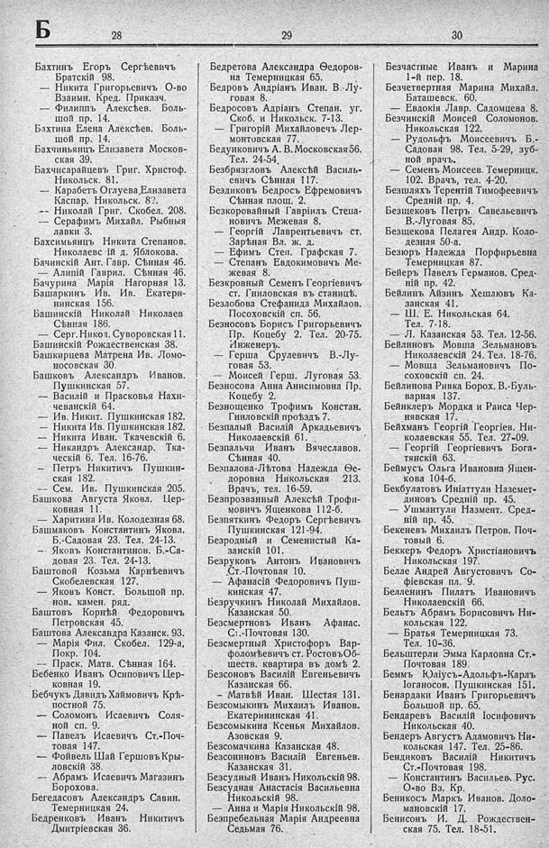

Лист источника 360
Скан

Распознанный текст
Б
28
Бахтинъ Егоръ Сергѣевичъ
Братскій 98.
— Никита Григорьевичъ О-во
Взаимн. Кред. Приказч.
— Филиппъ Алексѣев. Боль-
шой пр. 14.
Бахтина Елена Алексѣев. Боль-
шой пр. 14.
Бахчиньянцъ Елизавета Москов-
ская 39.
Бахчисарайцевъ Григ. Христоф.
Никольск. 81.
— Карабетъ Оглуева, Елизавета
Каспар. Никольск. 82.
-- Николай Григ. Скобел. 208.
— Серафимъ Михайл. Рыбныя
лавки 3.
Бахсимьянцъ Никита Степанов.
Николаевс ій д. Яблокова.
Бачинскій Ант. Гавр. Сѣнная 46.
— Алипій Гаврил. Сѣнная 46.
Бачурина Марія Нагорная 13.
Башаркинъ Ив. Ив. Екатери-
нинская 156.
Башинскій Николай Николаев
Сѣнная 186.
— Серг. Никол. Суворовская 11.
Башинскій Рождественская 38.
Башкирцева Матрена Ив. Ломо-
носовская 30.
Башковъ Александръ Иванов.
Пушкинская 57.
— Василій и Прасковья Нахи-
чеванскій 64.
— Ив. Никит. Пушкинская 182.
— Никита Ив. Пушкинская 182.
— Никита Иван. Ткачевскій 6.
— Никандръ Александр. Тка-
ческій 6. Тел. 16-76.
— Петръ Никитичъ Пушкин-
ская 182.
-- Сем. Ив. Пушкинская 205.
Башкова Августа Яковл. Цер-
ковная 11.
— Харитина Ив. Колодезная 68.
Башмаковъ Константинъ Яковл.
Б.-Садовая 23. Тел. 24-13.
- Яковъ Константинов. Б.-Са-
довая 23. Тел. 24-13.
Баштовой Козьма Карнѣевичъ
Скобелевская 127.
— Яковъ Конст. Большой пр.
нов. камен. ряд.
Баштовъ Корнѣй Федоровичъ
Петровская 45.
Баштова Александра Казанск. 93.
— Марія Фил. Скобел. 129-а,
Покр. 104.
-- Праск. Матв. Сѣнная 164.
Бебенко Иванъ Осиповичъ Цер-
ковная 19.
Бебчукъ Давидъ Хаймовичъ Крѣ-
постной 75.
— Соломонъ Исаевичъ Соля-
ной сп. 9.
— Павелъ Исаевичъ Ст.-Поч-
товая 147.
— Фойвель Шай Гершовъ Кры-
ловскій 38.
— Абрамъ Исаевичъ Магазинъ
Борохова.
Бегедасовъ Александръ Савин.
Темерницкая 24.
Бедренковъ Иванъ Никитичъ
Дмитріевская 36.
29
Бедретова Александра Ѳедоров-
на Темерницкая 65.
Бедровъ Андріанъ Иван. В.-Лу-
говая 8.
Бедросовъ Адріанъ Степан. уг.
Скоб. и Никольск. 7-13.
— Григорій Михайловечъ Лер-
монтовская 77.
Бедунковичъ А. В. Московская 56.
Тел. 24-54.
Безбрязгловъ Алексѣй Василь-
евичъ Сѣнная 117.
Бездиковъ Бедросъ Ефремовичъ
Сѣнная площ. 2.
Безкоровайный Гавріилъ Степа-
новичъ Межевая 8.
— Георгій Лаврентьевичъ ст.
Зарѣная Вл. ж. д.
— Ефимъ Степ. Графская 7.
— Степанъ Евдокимовичъ Ме-
жевая 8.
Безкровный Семенъ Георгіевичъ
ст. Гниловская въ станицѣ.
Безлобова Стефанида Михаилов.
Посоховскій сп. 56.
Безносовъ Борисъ Григорьевичъ
Пр. Коцебу 2. Тел. 20-75.
Инженеръ.
— Герша Срулевичъ В.-Лу-
говая 53.
— Моисей Герш. Луговая 53.
Безносова Анна Анисимовна Пр.
Коцебу 2.
Безнощенко Трофимъ Констан.
Гниловскій проѣздъ 7.
Безпалый Василій Аркадьевичъ
Николаевскій 61.
Безпальчи Иванъ Вячеславов.
Сѣнная 40.
Безпалова-Лѣтова Надежда Ѳе-
доровна Никольская 213.
Врачъ, тел. 16-59.
Безпрозванный Алексѣй Трофи-
мовичъ Ященкова 112-б.
Безпяткинъ Федоръ Сергѣевичъ
Пушкинская 121-94.
Безродный и Семенистый Ка-
занскій 101.
Безруковъ Антонъ Ивановичъ
Ст.-Почтовая 10.
— Афанасій Федоровичъ Пуш-
кинская 47.
Безручкинъ Николай Михайлов.
Казанская 50.
Безсмертновъ Иванъ Афанас.
Ст.-Почтовая 130.
Безсмертный Христофоръ Вар-
фоломѣевичъ ст. Ростовъ Об-
ществ. квартира въ домѣ 2.
Безсоновъ Василій Евгеньевичъ
Казанская 66.
— Матвѣй Иван. Шестая 131.
Безсомыкинъ Михаилъ Иванов.
Екатерининская 41.
Безсомыкина Ксенья Михайлов.
Азовская 9.
Безсомачкина Казанская 48.
Безсониновъ Василій Евгеньев.
Казанская 31.
Безсудный Иванъ Никольскій 98.
Безсудная Анастасія Васильевна
Никольскій 98.
— Анна и Марія Никольскій 98.
Безпредельная Марія Андреевна
Седьмая 76.
30
Безчастные Иванъ и Марина
1-й пер. 18.
Безчетвертная Марина Михайл.
Баташевск. 60.
— Евдокія Лавр. Садомцева 8.
Безчинскій Моисей Соломонов.
Никольская 122.
— Рудольфъ Моисеевичъ Б.-
Садовая 98. Тел. 5-29, зуб-
ной врачъ.
— Семенъ Моисеев. Темерницк.
102. Врачъ, тел. 4-20.
Безшляхъ Терентій Тимофеевичъ
Средній пр. 4.
Безщековъ Петръ Савельевичъ
В.-Луговая 85.
Безщекова Пелагея Андр. Коло-
дезная 50-а.
Безюръ Надежда Порфирьевна
Темерницкая 87.
Бейеръ Павелъ Германов. Сред-
ній пр. 42.
Бейлинъ Айзинъ Хешлювъ Ка-
занская 41.
— Ш. Е. Никольская 64.
Тел. 7-18.
— Л. Казанская 53. Тел. 12-56.
Бейлиновъ Мовша Зельмановъ
Николаевскій 24. Тел. 18-76.
— Мовша Зельмановичъ По-
соховскій сп. 24.
Бейлинова Ривка Борох. В.-Буль-
варная 137.
Бейнклеръ Мордка и Раиса Чер-
нявская 17.
Бейхманъ Георгій Георгіев. Ни-
колаевская 55. Тел. 27-09.
— Георгій Георгіевичъ Бога-
тянскій 63.
Беймусъ Ольга Ивановна Ящен-
кова 104-б.
Бекбулатовъ Иніаттули Наземет-
диновъ Средній пр. 45.
— Ушмантули Назмент. Сред-
ній пр. 45.
Бекеневъ Михаилъ Петров. Поч-
товый 6.
Беккеръ Федоръ Христіановичъ
Никольская 197.
Белле Андрей Августовичъ Со-
фіевская пл. 9.
Белленинъ Пилатъ Ивановичъ
Николаевскій 66.
Бельтъ Абрамъ Борисовичъ Ни-
кольская 122.
— Братья Темерницкая 73.
Тел. 10-36.
Бельштерли Эмма Карловна Ст.-
Почтовая 189.
Беммъ Юліусъ-Адольфъ-Карлъ
Іоганосов. Пушкинская 151.
Бенардаки Иванъ Григорьевичъ
Большой пр. 65.
Бендаревъ Василій Іосифовичъ
Никольская 40.
Бендеръ Августъ Адамовичъ Ни-
кольская 147. Тел. 25-86.
Бендиковъ Василій Никитичъ
Ст.-Почтовая 198.
— Константинъ Васильев. Рус.
О-во Вз. Кр.
Беникосъ Маркъ Иванов. Доло-
мановскій 17.
Бенисонъ И. Д. Рождествен-
ская 75. Тел. 18-51.